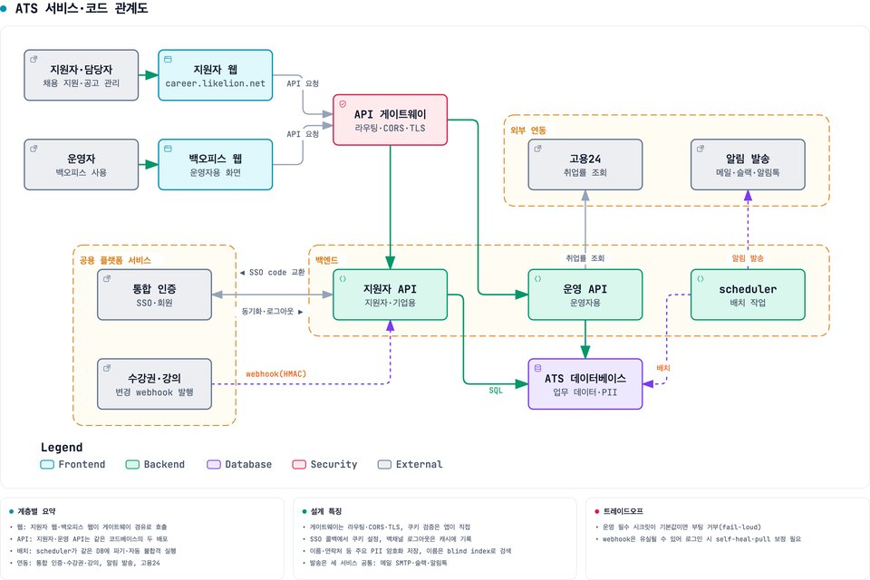
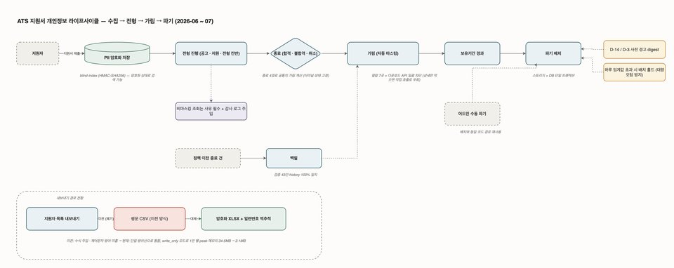

2026년 4월 ~ 6월 구축, 이후 운영
채용 플랫폼(ATS) 신규 구축
구직자 커리어홈과 기업·운영 백오피스
34.5MB에서 2.1MB로
지원자 1만 행을 내보낼 때 최대 메모리, 암호화 XLSX로 바꾸기 전과 후
- 팀 구성
- 백엔드 1(본인), 프론트 2, 기획 1
- 기술
- FastAPI, PostgreSQL, Keycloak, kustomize, ArgoCD

문제
수강생과 수료생의 취업을 돕는 채용 플랫폼을 새로 만들어야 했는데, 인프라를 AWS에서 OCI로 옮기는 시기와 겹쳐 앱과 배포 기반을 함께 세워야 했습니다. 지원서에는 이력서와 연락처 같은 개인정보가 담깁니다.
판단
검색이 다소 불편해지더라도 개인정보 보호를 먼저 지키기로 했습니다.
한 일
- 구직자용 커리어홈과 기업·운영용 백오피스 두 앱으로 나눠 설계했습니다.
- 개인정보는 암호화해서 저장하고 검색은 blind index(HMAC-SHA256)로 합니다. 부분 일치 검색을 포기하는 대신 평문 컬럼을 하나도 두지 않았습니다.
- 전형이 끝나면 열람 화면 7곳과 다운로드 API를 함께 막습니다. 상세 화면만 막으면 API를 직접 불러 우회할 수 있어서입니다. 보유기간이 지나면 파일과 DB 행을 한 트랜잭션으로 파기하고, 파기 배치는 D-14와 D-3에 미리 알리며 하루 임계값을 넘으면 멈춥니다.

결과
- 2026년 6월에 첫 prod 릴리스로 열었고, 석 달 동안 기업 61곳이 공고 132건을 올렸습니다(2026년 9월 9일 운영 DB 조회).
- 지원자 내보내기를 암호화 XLSX로 바꾸면서 1만 행 기준 최대 메모리를 34.5MB에서 2.1MB로 줄였습니다.